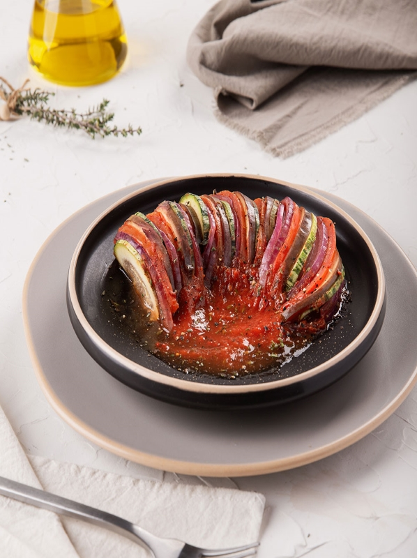

Ratatouille
Ingredientes:
- 1 berenjena grande
- 2 calabacines medianos
- 1 pimiento rojo
- 1 pimiento verde
- 1 cebolla grande
- 3 tomates grandes
- 3 dientes de ajo, picados
- Aceite de oliva
- Sal y pimienta al gusto
- Hierbas provenzales (tomillo, romero, orégano) al gusto
- Hojas de albahaca fresca, para decorar (opcional)
Preparación
- Lava todas las verduras. Corta la berenjena, los calabacines, los pimientos y los tomates en rodajas de aproximadamente medio centímetro de grosor. Puedes dejar la piel de las verduras para agregar textura y color al plato.
- Coloca las rodajas de berenjena en un colador grande y espolvorea sal sobre ellas. Deja que repose durante unos 30 minutos para que suelten el exceso de líquido. Esto ayudará a reducir su amargor.
- Mientras tanto, en una sartén grande, calienta un poco de aceite de oliva a fuego medio. Agrega la cebolla picada y el ajo, y saltea hasta que estén tiernos y fragantes.
- Una vez que la berenjena haya reposado, enjuágala bajo agua fría para quitar la sal y sécala bien con papel absorbente.
- Agrega la berenjena, los calabacines y los pimientos a la sartén con la cebolla y el ajo. Cocina las verduras a fuego medio-alto durante unos 10 minutos, revolviendo ocasionalmente, hasta que estén ligeramente doradas y tiernas.
- Agrega los tomates picados a la sartén y sazona con sal, pimienta y hierbas provenzales al gusto. Cocina a fuego medio durante otros 10 minutos, o hasta que los tomates se hayan ablandado y se haya formado una especie de salsa.
- Prueba y ajusta los condimentos según tu preferencia. Si lo deseas, puedes agregar un poco más de aceite de oliva en este punto para realzar el sabor.
- Retira del fuego y deja reposar el ratatouille durante unos minutos antes de servir. Esto permitirá que los sabores se mezclen y se intensifiquen.
- Sirve el ratatouille caliente o a temperatura ambiente. Puedes decorar con hojas de albahaca fresca antes de servir, si lo deseas.